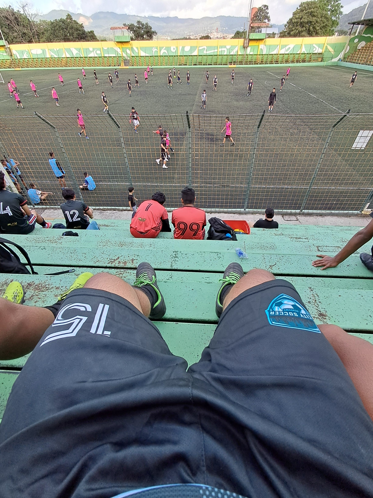

Me desempeño en las 4 posiciones de la defensa: lateral derecho, lateral izquierdo, central y líbero.
He jugado en equipos como:
Una de mis experiencias más importantes fue jugar con un equipo de Primera División. 